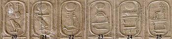

Esto es un texto de prueba para entender como funciona bootstrap
Gran Pirámide de Guiza (también conocida como pirámide de Keops o de Jufu) es, además de la mayor de las pirámides de Egipto, la más antigua de las siete maravillas del mundo antiguo y la única que todavía perdura.

Fue ordenada construir por el faraón Keops de la cuarta dinastía del Antiguo Egipto. La fecha estimada de terminación de la construcción de la Gran Pirámide es alrededor de 2,600 a. C.


La Gran Esfinge de Guiza es una escultura monumental que se encuentra en la ribera occidental del río Nilo, en la meseta de Guiza, unos veinte kilómetros al suroeste del centro de El Cairo, en Egipto.
Los egiptólogos estiman que fue esculpida c. s. XXVI a. C., formando parte del complejo funerario del rey, durante la dinastía IV de Egipto.
La Lista Real de Abidos es un bajorrelieve con los nombres de los faraones más importantes que precedieron a Seti I, setenta y seis reyes, generalmente con su Nombre de Trono, que se encuentra en el "Sala de los Antecesores" del Templo de Seti I en Abidos.


- 20 Se-nefru (Seneferu)
- 21 Ju-fu (Jufu) (Keops)
- 22 Dyed-ef-ra (Dyedefra)
- 23 Jau-f-ra (Jafra) (Kefren)
- 24 Men-kau-ra (Menkaura) (Micerino)
- 25 Shep-ses-kaf (Shepseskaf)
Guiza es una ciudad de Egipto situada en el Nilo, a unos 20 km al suroeste del centro de El Cairo, formando parte del área metropolitana de la capital egipcia. Es la capital de la gobernación del mismo nombre.
Es célebre en el mundo porque en sus cercanías se encuentra la meseta de Guiza, lugar donde hace unos 4600 años se erigieron las tres grandes pirámides de la dinastía IV. Guiza forma parte de la gran necrópolis de Menfis, que se extendía a lo largo de más de cuarenta kilómetros y era conocida en el Imperio Antiguo de Egipto con el nombre genérico de Her-necher (la Necrópolis) o Imentet (Occidente).
Cada una de las tres grandes pirámides tenía su propio nombre, que designaba también a la necrópolis que la circundaba: El horizonte luminoso de Jufu Keops, Kefrén es grande y Micerino es divino. Durante el reinado de Keops fue cuando la meseta de Guiza alcanza gran relevancia.